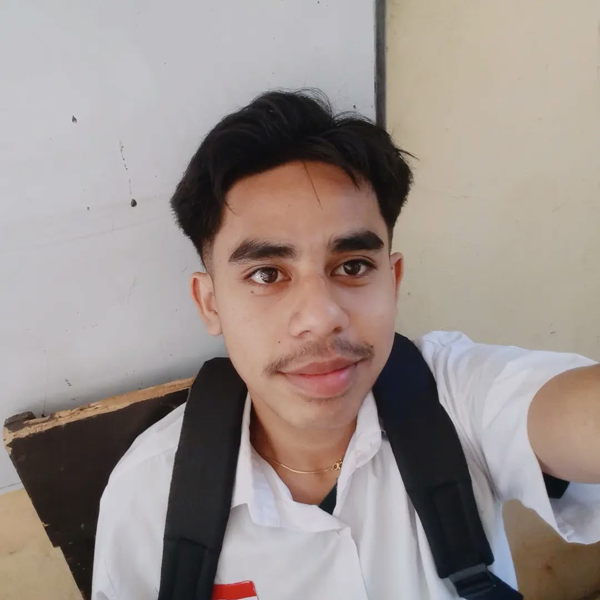

Kelas: XI TKJA
Sekolah: SMKN 2 ENDE
Hobi: Coding, Desain Grafis
Cita-cita: Web Developer Profesional
Puji syukur saya panjatkan kehadirat Tuhan Yang Maha Esa, karena atas rahmat-Nya saya dapat memperkenalkan diri melalui halaman profil ini. Tujuan dari profil ini adalah untuk memperkenalkan identitas, hobi, serta cita-cita saya sebagai pelajar dari SMKN 2 ENDE. Saya berharap profil ini dapat memberikan gambaran singkat mengenai siapa saya dan semangat saya dalam belajar serta berkarya. Akhir kata, semoga profil ini dapat memberikan inspirasi bagi siapa saja yang membacanya.